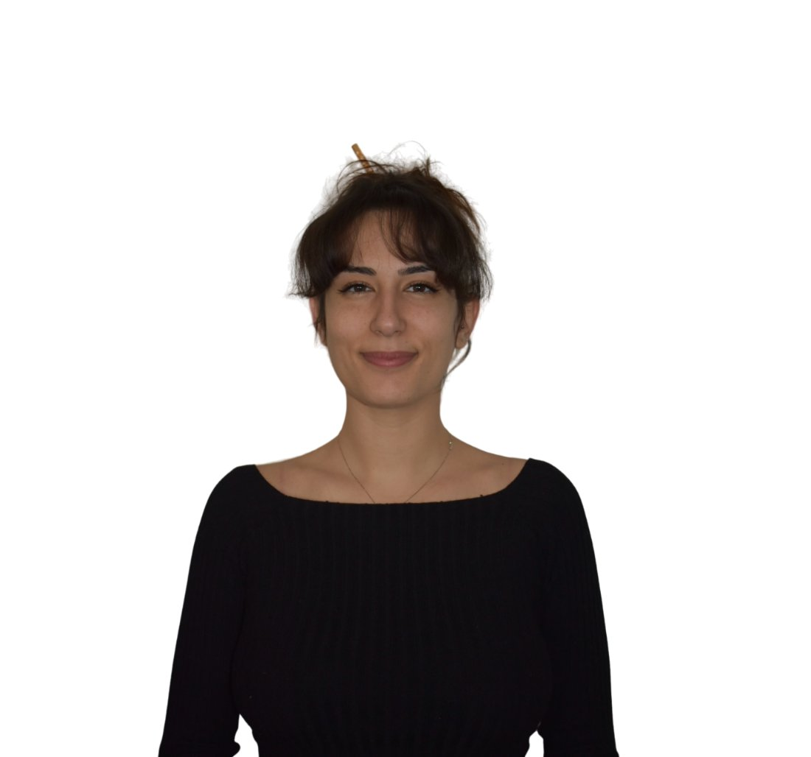

Primo colloquio
Conoscenza reciproca
Uno spazio iniziale utile per esplorare la richiesta portata, le aspettative rispetto al percorso e comprendere insieme se questo può rappresentare uno spazio adeguato ai propri bisogni.
Uno spazio di ascolto clinico, con attenzione alla relazione fra mente e corpo.
Queste esperienze fanno parte della vita, ma quando diventano troppo intense possono ostacolare il benessere e influenzare la quotidianità.
Voglio prendermi cura di me →Il mio lavoro si fonda sull'ascolto clinico della persona nella sua unicità, con particolare attenzione alla relazione tra dimensione psichica e dimensione corporea, un'area che ha attraversato l'intero mio percorso di formazione e che oggi è il cuore della mia pratica.
Mi occupo di colloqui clinici individuali, rivolti ad adulti e giovani adulti, e di percorsi di psicoterapia.
Il primo colloquio è uno spazio di conoscenza reciproca, in cui chiariamo insieme la domanda che porti e valutiamo se e come iniziare un percorso.
Uno spazio iniziale utile per esplorare la richiesta portata, le aspettative rispetto al percorso e comprendere insieme se questo può rappresentare uno spazio adeguato ai propri bisogni.
Ogni seduta dura circa cinquanta minuti. La frequenza degli incontri viene concordata insieme in base agli obiettivi del percorso.
Pone l'ascolto al centro della relazione clinica e considera la persona nella sua complessità, mantenendo attenzione alla storia individuale, alle relazioni e ai diversi livelli dell'esperienza.
Le domande più frequenti su come avviene il primo contatto, lo svolgimento dei colloqui e il funzionamento del percorso.
Un primo scambio per presentarci e valutare insieme lo spazio e il tempo di un incontro.
Scrivimi una mail per raccontarmi cosa cerchi e fissare un primo contatto.
dott.ssagiuliamirabile@gmail.comUn modo diretto per parlare e fissare un primo colloquio.
(+39) 339 1854836Lo Studio si trova in Corso Vittorio Emanuele II, a Torino. Clicca per aprire la mappa.
Corso Vittorio Emanuele II n°15810138 Torino
Ho conseguito la Laurea Triennale in Scienze e Tecniche Psicologiche presso l'Università degli Studi di Messina e la Laurea Magistrale in Psicologia Clinica: salute e interventi nella comunità presso l'Università degli Studi di Torino, dove ho svolto anche la Scuola di Specializzazione in Psicologia Clinica.
Durante il percorso di specializzazione ho avuto modo di approfondire il legame tra mente, corpo ed esperienza emotiva, attraverso il lavoro clinico e l'esperienza formativa, con particolare riferimento ai vissuti connessi alla sofferenza e alla malattia. In questo contesto ho approfondito il lavoro con persone che convivono con patologie croniche e percorsi di cura complessi.
Nel corso della mia attività clinica ho maturato esperienza in interventi di ascolto e sostegno psicologico breve rivolti ad adolescenti, giovani adulti e adulti, nell'ambito di sportelli dedicati e contesti di consultazione. Parallelamente ho svolto attività clinica con giovani adulti e adulti, attraverso percorsi psicologici di maggiore continuità, rivolti a persone che affrontano momenti di sofferenza emotiva, difficoltà relazionali, eventi traumatici o l'impatto psicologico della malattia.
Considero la relazione terapeutica uno strumento fondamentale del percorso di cura. Per questo ritengo importante accogliere ogni persona in uno spazio di ascolto attento e rispettoso, orientato all'esplorazione delle difficoltà che sta attraversando, della sua storia e delle sue risorse.
A partire da una lettura psicodinamica dell'esperienza, mantengo un costante interesse per le evidenze scientifiche e un'attenzione alla specificità di ogni percorso individuale.